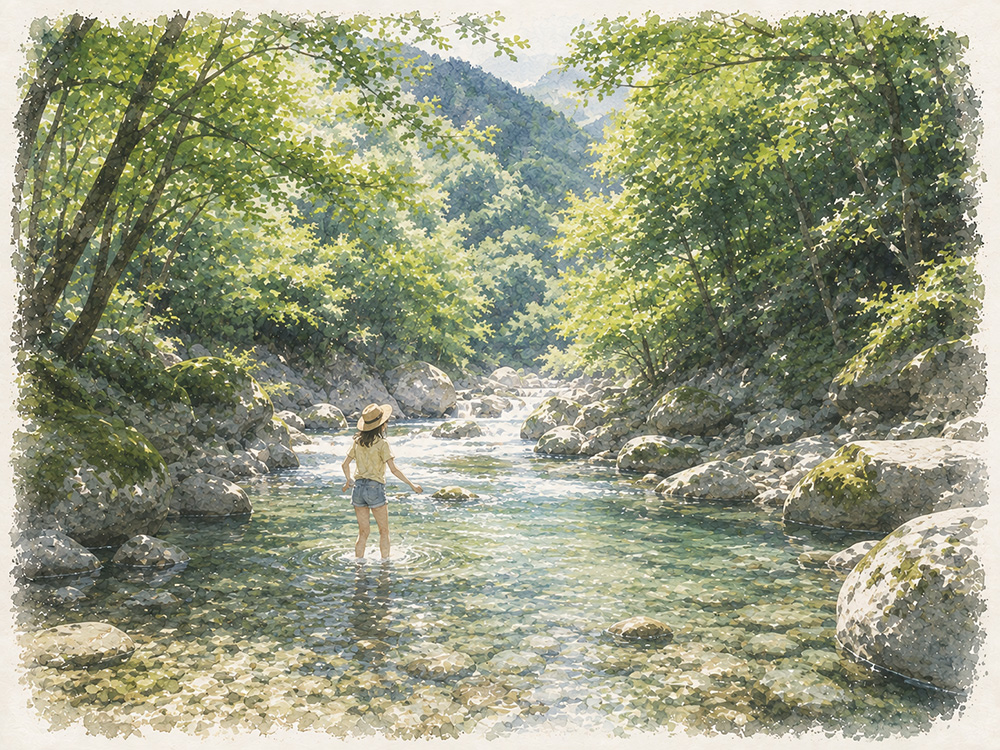

決定プラン

車でピックアップ
車
9:00〜16:00 (移動含む)
水辺に似合う軽やかな服装。サンダルなど、水辺を歩きやすい履物
古民家カフェでかき氷
In Case of Weather
台風通過後のため、当日の川の水量や天候によっては渓流での撮影が難しい可能性があります。
そのときは、秋川渓谷から都心方面へ戻る道すがら、こんな場所へ切り替えるのも楽しそうです。
福生ベースサイドストリート
アメリカンな街並みで、少しポップな夏の写真を。
横田基地沿いに続く、アメリカンな雰囲気のストリート。英字看板やカラフルなお店、ヴィンテージ感のある街角を背景に、秋川渓谷とはまったく違う街歩きポートレートが撮れそうです。古着屋や雑貨屋をのぞいたり、ブルーシールでアイスを食べたり。のんびり寄り道しながら、夏の午後をスナップするのも楽しそう。
アメリカン ・ 街歩き ・ アイスクリーム
昭島・モリパーク
緑とアウトドアの空気を残しながら、のんびり撮影。
アウトドアショップや緑のある空間を歩きながら、ナチュラルな雰囲気で撮影。秋川渓谷から場所を変えても、自然やアウトドアの空気感をそのままつなげられるのが魅力です。お店やカフェもあるので、天候を見ながら休憩を挟みやすい場所です。
アウトドア ・ 緑 ・ カフェ
立川・GREEN SPRINGS
雨上がりの街と緑を、少し都会的に。
緑、水辺、階段、モダンな建築が組み合わさった開放的な空間。自然の柔らかさを残しながら、秋川とは少し違った都会的なポートレートが撮れそうです。小雨や雨上がりなら、透明傘や濡れた路面も写真の雰囲気として活かせそうです。
緑 ・ 水辺 ・ 雨上がり
江戸東京たてもの園
雨の日なら、少しだけ昔の東京へ。
古い民家や商店、路地、縁側など、昔の東京の街並みを楽しめる場所。軒下や建物の中も活かしながら、しっとりした雨の日ならではのポートレートが撮れそうです。秋川とはまったく違う、小さな時間旅行のような撮影に切り替えられます。
古い街並み ・ レトロ ・ 雨の日